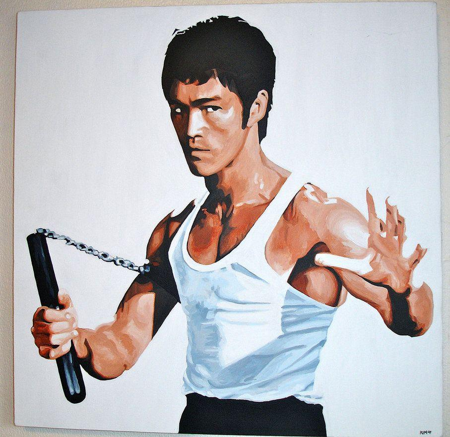
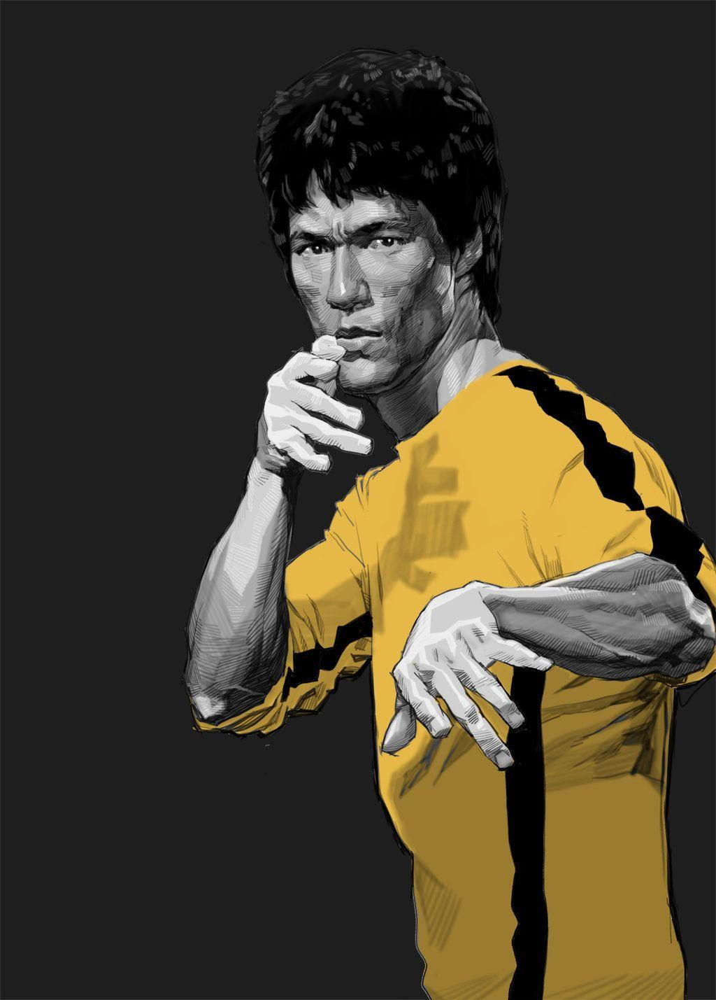
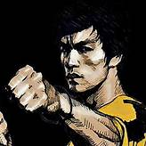

|  |
Full name: Lee Jun Fan Date of birth: 27/11/1940 Place of birth: San Francisco,USA Profession: Martial Artist, Philosopher, Actor, Producer, Dancer Wife: Linda Emery |
 |
|  | A film actor and instructor of the combat practices, he gained a worldwide status in a short span of life and soon became one of the most influential martial artists of all time. Born in an affluent family, Lee gained entry into films long before he realized the same and soon became a famous child actor. Acting and martial arts went hand in hand as he turned to a martial art instructor. However, it was his relocation to Hong Kong and association with films that elevated the popularity of both him as an actor and martial arts as a combat practice. His films created box office records, eventually changing the way martial arts and films related to it were looked upon by the world. Lee is accredited with the formulation of Jeet Kune Do, (The Way of the Intercepting Fist), a new form of martial art which was quite different from the traditional and rigid form in matters of practicality, flexibility, speed, and efficiency. |

|